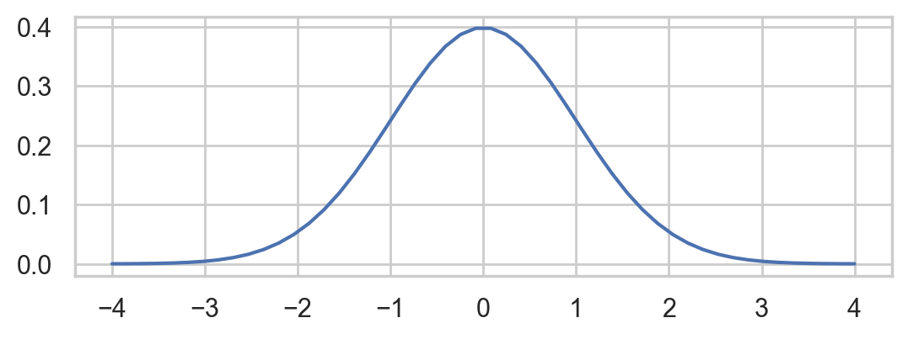
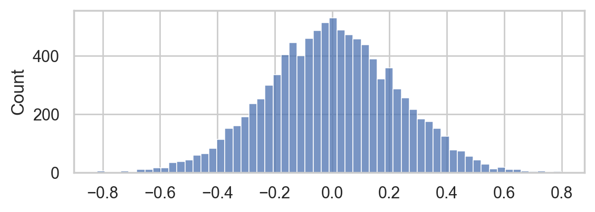
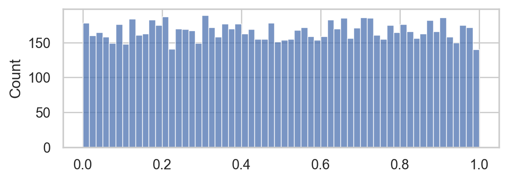
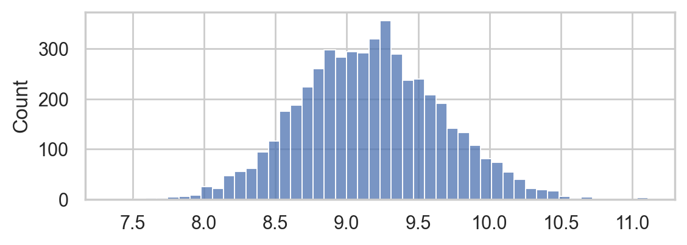
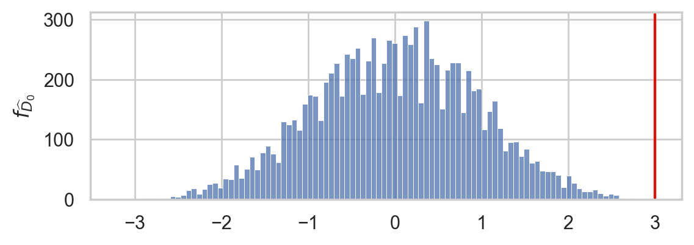

Using Python for STATS#
See blog post here (draft in gdoc).Feel free to leave comments, suggest-edits, or make edits directly in the gdoc.
# Figures setup
import matplotlib.pyplot as plt
import seaborn as sns
plt.clf() # needed otherwise `sns.set_theme` doesn't work
sns.set_theme(
style="whitegrid",
rc={'figure.figsize': (6.25, 2.0)},
)
# High-resolution figures please
%config InlineBackend.figure_format = 'retina'
<Figure size 640x480 with 0 Axes>
What can python do for you?#
Python as a calculator#
2.1 + 3.4
5.5
num1 = 2.1
num2 = 3.4
num1 + num2
5.5
(num1 + num2) / 2
2.75
Powerful primitives and built-ins#
grades = [80, 90, 70, 60]
avg = sum(grades) / len(grades)
avg
75.0
For loops#
total = 0
for grade in grades:
total = total + grade
avg = total / len(grades)
avg
75.0
Math functions and Python functions#
In math, a function is a mapping from input values (usually denoted x) to output values (usually denoted y).
Consider the mapping that doubles the input and adds five to it, which we can express as the math function \(f(x) = 2x+5\). For any input \(x\), the output of the function \(f\) is denoted \(f(x)\) and is equal to \(2x+5\). For example, \(f(3)\) describes the output of the function when the input is \(x=3\), and it is equal to \(2(3)+5 = 6 + 5 = 11\).
The Python equivalent of the math function \(f(x) = 2x+5\) is shown below.
def f(x):
y = 2*x + 5
return y
To define the Python function called f,
we use the def keyword,
then write all the function calculations in an indented block
that ends with a return statement for the output of the function.
To call the function f with input x, we simply writhe f(x) in Python,
which is the same as the math notation we use for “evaluate the function at the value x.”
f(3)
11
The mean is defined as \(\mathbf{Mean}(\mathbf{x}) = \frac{1}{n} \sum_{i=1}^{i=n} x_i\), where \(\mathbf{x} = [x_1, x_2, x_3, \ldots, x_n]\) is a list of values.
def mean(sample):
total = 0
for xi in sample:
total = total + xi
avg = total / len(sample)
return avg
mean(grades)
75.0
Why do you need coding for statistics?#
Descriptive statistics#
Data visualization#
pricesW = [11.8, 10, 11, 8.6, 8.3, 9.4, 8, 6.8, 8.5]
len(pricesW)
9
mean(pricesW)
9.155555555555555
import seaborn as sns
sns.stripplot(x=pricesW, jitter=0)
<Axes: >

sns.histplot(x=pricesW)
<Axes: ylabel='Count'>

sns.boxplot(x=pricesW)
<Axes: >

# FIGURES
import matplotlib.pyplot as plt
import seaborn as sns
with plt.rc_context({"figure.figsize":(8,2)}):
fig, (ax1, ax2, ax3) = plt.subplots(1,3)
ax1.set_title("(a) strip plot")
sns.stripplot(x=pricesW, ax=ax1, jitter=0)
ax1.set_xticks(range(7,13))
ax2.set_title("(b) hist plot")
sns.histplot(x=pricesW, ax=ax2)
ax2.set_xticks(range(7,13))
ax2.set_yticks(range(0,5))
ax3.set_title("(c) box plot")
sns.boxplot(x=pricesW, ax=ax3)
ax3.set_xticks(range(7,13))
filename = "figures/epricesW_strip_hist_box_plots.png"
fig.tight_layout()
fig.savefig(filename, dpi=300, bbox_inches="tight", pad_inches=0)
---------------------------------------------------------------------------
FileNotFoundError Traceback (most recent call last)
Cell In[17], line 22
20 filename = "figures/epricesW_strip_hist_box_plots.png"
21 fig.tight_layout()
---> 22 fig.savefig(filename, dpi=300, bbox_inches="tight", pad_inches=0)
File /opt/hostedtoolcache/Python/3.8.17/x64/lib/python3.8/site-packages/matplotlib/figure.py:3343, in Figure.savefig(self, fname, transparent, **kwargs)
3339 for ax in self.axes:
3340 stack.enter_context(
3341 ax.patch._cm_set(facecolor='none', edgecolor='none'))
-> 3343 self.canvas.print_figure(fname, **kwargs)
File /opt/hostedtoolcache/Python/3.8.17/x64/lib/python3.8/site-packages/matplotlib/backend_bases.py:2366, in FigureCanvasBase.print_figure(self, filename, dpi, facecolor, edgecolor, orientation, format, bbox_inches, pad_inches, bbox_extra_artists, backend, **kwargs)
2362 try:
2363 # _get_renderer may change the figure dpi (as vector formats
2364 # force the figure dpi to 72), so we need to set it again here.
2365 with cbook._setattr_cm(self.figure, dpi=dpi):
-> 2366 result = print_method(
2367 filename,
2368 facecolor=facecolor,
2369 edgecolor=edgecolor,
2370 orientation=orientation,
2371 bbox_inches_restore=_bbox_inches_restore,
2372 **kwargs)
2373 finally:
2374 if bbox_inches and restore_bbox:
File /opt/hostedtoolcache/Python/3.8.17/x64/lib/python3.8/site-packages/matplotlib/backend_bases.py:2232, in FigureCanvasBase._switch_canvas_and_return_print_method.<locals>.<lambda>(*args, **kwargs)
2228 optional_kws = { # Passed by print_figure for other renderers.
2229 "dpi", "facecolor", "edgecolor", "orientation",
2230 "bbox_inches_restore"}
2231 skip = optional_kws - {*inspect.signature(meth).parameters}
-> 2232 print_method = functools.wraps(meth)(lambda *args, **kwargs: meth(
2233 *args, **{k: v for k, v in kwargs.items() if k not in skip}))
2234 else: # Let third-parties do as they see fit.
2235 print_method = meth
File /opt/hostedtoolcache/Python/3.8.17/x64/lib/python3.8/site-packages/matplotlib/backends/backend_agg.py:509, in FigureCanvasAgg.print_png(self, filename_or_obj, metadata, pil_kwargs)
462 def print_png(self, filename_or_obj, *, metadata=None, pil_kwargs=None):
463 """
464 Write the figure to a PNG file.
465
(...)
507 *metadata*, including the default 'Software' key.
508 """
--> 509 self._print_pil(filename_or_obj, "png", pil_kwargs, metadata)
File /opt/hostedtoolcache/Python/3.8.17/x64/lib/python3.8/site-packages/matplotlib/backends/backend_agg.py:458, in FigureCanvasAgg._print_pil(self, filename_or_obj, fmt, pil_kwargs, metadata)
453 """
454 Draw the canvas, then save it using `.image.imsave` (to which
455 *pil_kwargs* and *metadata* are forwarded).
456 """
457 FigureCanvasAgg.draw(self)
--> 458 mpl.image.imsave(
459 filename_or_obj, self.buffer_rgba(), format=fmt, origin="upper",
460 dpi=self.figure.dpi, metadata=metadata, pil_kwargs=pil_kwargs)
File /opt/hostedtoolcache/Python/3.8.17/x64/lib/python3.8/site-packages/matplotlib/image.py:1689, in imsave(fname, arr, vmin, vmax, cmap, format, origin, dpi, metadata, pil_kwargs)
1687 pil_kwargs.setdefault("format", format)
1688 pil_kwargs.setdefault("dpi", (dpi, dpi))
-> 1689 image.save(fname, **pil_kwargs)
File /opt/hostedtoolcache/Python/3.8.17/x64/lib/python3.8/site-packages/PIL/Image.py:2410, in Image.save(self, fp, format, **params)
2408 fp = builtins.open(filename, "r+b")
2409 else:
-> 2410 fp = builtins.open(filename, "w+b")
2412 try:
2413 save_handler(self, fp, filename)
FileNotFoundError: [Errno 2] No such file or directory: 'figures/epricesW_strip_hist_box_plots.png'

Numerical summaries#
DATA_URL = "https://raw.githubusercontent.com/minireference/noBSstatsnotebooks/main/datasets/epriceswide.csv"
import pandas as pd
epriceswide = pd.read_csv(DATA_URL)
epriceswide
| East | West | |
|---|---|---|
| 0 | 7.7 | 11.8 |
| 1 | 5.9 | 10.0 |
| 2 | 7.0 | 11.0 |
| 3 | 4.8 | 8.6 |
| 4 | 6.3 | 8.3 |
| 5 | 6.3 | 9.4 |
| 6 | 5.5 | 8.0 |
| 7 | 5.4 | 6.8 |
| 8 | 6.5 | 8.5 |
pricesW = epriceswide["West"]
pricesE = epriceswide["East"]
# # ALT. we can input data by specifying lists of values
# pricesW = pd.Series([11.8,10,11,8.6,8.3,9.4,8,6.8,8.5])
# pricesE = pd.Series([7.7,5.9,7,4.8,6.3,6.3,5.5,5.4,6.5])
pricesW.mean()
9.155555555555557
pricesW.describe()
count 9.000000
mean 9.155556
std 1.562139
min 6.800000
25% 8.300000
50% 8.600000
75% 10.000000
max 11.800000
Name: West, dtype: float64
Understanding probability distributions#
Building computer models for probability distributions#
The standard normal distribution \(Z \sim \mathcal{N}(\mu=0,\sigma=1)\) has the probability density function:
The standard normal is a special case of the general normal \(\mathcal{N}(\mu, \sigma)\) where \(\mu\) is the mean and \(\sigma\) is the standard deviation.
import numpy as np
def fZ(z):
const = 1 / np.sqrt(2*np.pi)
exp = np.exp(-1/2 * z**2)
return const*exp
fZ(1)
0.24197072451914337
Predefined computer models#
We create a computer model for the general normal distribution
\(\mathcal{N}(\mu, \sigma)\) by calling norm(mu,sigma),
where norm is scipy.stats.norm.
from scipy.stats import norm
rvZ = norm(0,1)
rvZ
<scipy.stats._distn_infrastructure.rv_continuous_frozen at 0x131b05940>
rvZ.pdf(1)
0.24197072451914337
Probability model visualizations#
zs = np.linspace(-4, 4)
fZs = rvZ.pdf(zs)
sns.lineplot(x=zs, y=fZs)
<AxesSubplot: >

Doing probability calculations#
Calculating probabilities with the continuous random variable \(Z\) requires continuous need integral
from scipy.integrate import quad
quad(rvZ.pdf, 2, np.inf)[0]
0.02275013194817598
rvZ.cdf(2)
0.9772498680518208
1 - rvZ.cdf(2)
0.02275013194817921
Discrete random variable calculations#
Poisson random variable \(H\)
To see a complete worked example based on the see Example 3: hard disk failures and Section 2.1.5 Hard disks example in the PDF preview of Chapter 2.
Running statistical simulations#
Sampling distributions#
Simulate 10000 amples of size 20 from the standard normal random variable \(Z \sim \mathcal{N}(0,1)\) to generate the sampling distribution of the mean.
xbars = []
for i in range(0, 10000):
sample = rvZ.rvs(20)
xbar = mean(sample)
xbars.append(xbar)
xbars[0:5]
[-0.04615512729345514,
-0.16969498785088205,
0.027593815341524598,
0.326475804656304,
-0.29350437312572086]
sns.histplot(xbars)
<AxesSubplot: ylabel='Count'>

Verifying p-values#
from scipy.stats import norm, ttest_1samp
muK = 1000
sigmaK = 10
rvK = norm(muK, sigmaK)
count = 0
for j in range(0, 10000):
sample = rvK.rvs(20)
res = ttest_1samp(sample, popmean=muK)
if res.pvalue < 0.05:
count = count + 1
count / 10000
0.0521
from scipy.stats import norm, ttest_1samp
muK = 1000
sigmaK = 10
rvK = norm(muK, sigmaK)
pvals = []
for j in range(0, 10000):
sample = rvK.rvs(20)
res = ttest_1samp(sample, popmean=muK, alternative="greater")
pvals.append(res.pvalue)
sns.histplot(pvals, bins=60)
<AxesSubplot: ylabel='Count'>

Verifying confidence intervals#
import numpy as np
np.random.seed(10)
muK = 1000
sigmaK = 10
rvK = norm(muK, sigmaK)
count = 0
for j in range(0, 10000):
sample = rvK.rvs(20)
res = ttest_1samp(sample, popmean=1000)
ci = res.confidence_interval(confidence_level=0.90)
if ci.low <= muK <= ci.high:
count = count + 1
count / 10000
0.9049
Resampling methods#
Bootstrap estimation#
Generate 5000 bootstrap samples (sampling with replacement) from the sample pricesW.
Use the bootstrap samples to approximate the sampling distribution of the mean.
n = len(pricesW)
xbars_boot = []
for i in range(0, 5000):
bsample = np.random.choice(pricesW, n, replace=True)
xbar_boot = mean(bsample)
xbars_boot.append(xbar_boot)
sns.histplot(xbars_boot)
<AxesSubplot: ylabel='Count'>

Permutation test#
# TODO: simplify
def dmeans(xsample, ysample):
dhat = mean(xsample) - mean(ysample)
return dhat
# Calculate the observed difference between means
dprice = dmeans(pricesW, pricesE)
dprice
3.0
Obtain sampling distribution of the difference between means under the null hypothesis.
np.random.seed(42)
pdhats = []
for i in range(0, 10000):
prices = np.concatenate((pricesW, pricesE))
shuffled_prices = np.random.permutation(prices)
psampleW = shuffled_prices[0:len(pricesW)]
psampleE = shuffled_prices[len(pricesW):]
pdhat = dmeans(psampleW, psampleE)
pdhats.append(pdhat)
Compute the p-value of the observed difference between means dprice under the null hypothesis.
tails = [d for d in pdhats if abs(d) > dprice]
pvalue = len(tails) / len(pdhats)
pvalue
0.0002
# plot the sampling distribution in blue
ax = sns.histplot(pdhats, bins=100)
# plot red line for the observed statistic
plt.axvline(dprice, color="red")
# plot the values that are equal or more extreme in red
sns.histplot(tails, ax=ax, bins=100, color="red")
_ = ax.set_ylabel("$f_{\widehat{D}_0}$")

Data cleaning#
import pandas as pd
DATA_URL = "https://raw.githubusercontent.com/minireference/noBSstatsnotebooks/main/datasets/epriceswide.csv"
epriceswide = pd.read_csv(DATA_URL)
epriceswide
| East | West | |
|---|---|---|
| 0 | 7.7 | 11.8 |
| 1 | 5.9 | 10.0 |
| 2 | 7.0 | 11.0 |
| 3 | 4.8 | 8.6 |
| 4 | 6.3 | 8.3 |
| 5 | 6.3 | 9.4 |
| 6 | 5.5 | 8.0 |
| 7 | 5.4 | 6.8 |
| 8 | 6.5 | 8.5 |
click here to see a visualization of the melt operation.
eprices = pd.melt(epriceswide, var_name="end", value_name='price')
eprices
| end | price | |
|---|---|---|
| 0 | East | 7.7 |
| 1 | East | 5.9 |
| 2 | East | 7.0 |
| 3 | East | 4.8 |
| 4 | East | 6.3 |
| 5 | East | 6.3 |
| 6 | East | 5.5 |
| 7 | East | 5.4 |
| 8 | East | 6.5 |
| 9 | West | 11.8 |
| 10 | West | 10.0 |
| 11 | West | 11.0 |
| 12 | West | 8.6 |
| 13 | West | 8.3 |
| 14 | West | 9.4 |
| 15 | West | 8.0 |
| 16 | West | 6.8 |
| 17 | West | 8.5 |
pricesW = eprices[eprices["end"]=="West"]["price"]
pricesE = eprices[eprices["end"]=="East"]["price"]
pricesW.values, pricesE.values
(array([11.8, 10. , 11. , 8.6, 8.3, 9.4, 8. , 6.8, 8.5]),
array([7.7, 5.9, 7. , 4.8, 6.3, 6.3, 5.5, 5.4, 6.5]))
Statistics procedures as code#
def gen_sampling_dist(rv, estfunc, n, N=10000):
"""
Simulate `N` samples of size `n` from the random variable `rv` to
generate the sampling distribution of the estimator `estfunc`.
"""
estimates = []
for i in range(0, N):
sample = rv.rvs(n)
estimate = estfunc(sample)
estimates.append(estimate)
return estimates
def gen_boot_dist(sample, estfunc, B=5000):
"""
Generate estimates from the sampling distribution of the estimator `estfunc`
based on `B` bootstrap samples (sampling with replacement) from `sample`.
"""
n = len(sample)
bestimates = []
for i in range(0, B):
bsample = np.random.choice(sample, n, replace=True)
bestimate = estfunc(bsample)
bestimates.append(bestimate)
return bestimates
def permutation_test(xsample, ysample, estfunc, P=10000):
"""
Compute the p-value of the observed estimate `estfunc(xsample,ysample)`
under the null hypothesis where the group membership is randomized.
"""
# 1. Compute the observed value of `estfunc`
obsest = estfunc(xsample, ysample)
# 2. Get sampling dist. of `estfunc` under H0
pestimates = []
for i in range(0, P):
rsx, rsy = resample_under_H0(xsample, ysample)
pestimate = estfunc(rsx, rsy)
pestimates.append(pestimate)
# 3. Compute the p-value
tails = tailvalues(pestimates, obsest)
pvalue = len(tails) / len(pestimates)
return pvalue
How much Python do you need?#
Conclusion#
CUT MATERIAL#
Pandas equivalent#
import pandas as pd
gseries = pd.Series(grades)
gseries.mean()
75.0
\(N \sim \mathcal{N}(\mu,\sigma)\) has the probability density function:
where \(\mu\) is the mean and \(\sigma\) is the standard deviation.
We use the notation \(\mathcal{N}(\mu, \sigma)\) to describe the distribution as math,
and norm(mu,sigma) to describe as computer model.
import numpy as np
def fN(x, mu=0, sigma=1):
const = 1 / (sigma*np.sqrt(2*np.pi))
exp = np.exp( -1/2 * ( (x-mu)/sigma )**2 )
return const * exp
fN(3, 2, 3)
0.12579440923099774